So, you decided you want to learn fpga programming and have done the prerequisite from the introduction 0 as well as done the simple logic circuit via quartus’s bdf files. Today we want to show you how to figure out Quartus by doing another hardware equivalent of the hello-World program used in the software world - we do program a binary counter showing of by the LED array we have available on our DE0-nano board. For this we will make use of both the Block Diagram Files (bdf) from Quartus and the popular HDL (Hardware Description Language) Verilog.
So we simply start by opening Quartus via the desktop-icon. Then we go to menu File >> New Project wizard as shown below, and click it. Then we give it the name counter, we quickly click through the steps of the wizard, there is no more action to do, just click ok until the end of the wizard. During this tutorial we will create the following files:
-
binarycounter.v - The verilog module with the binary counter
-
clock_divider.v - A clock divider to slow the system clock to a low frequency the eye still can follow
-
counter.bdf - A quartus schematic file to tie both above modules and connect it to the pins
We start with the binary counter.
Binary counter in Verilog
First we define the module, giving it a name as well the in(s) and out(s) it is carrying as parameters. For now this is very simple: We have clk which is shortly for clock as input, and one output called out.
module bin_counter(clk, out);
Next we define the input(s) and outputs respectively, the clock will be defined as input from a wire, since it is going into the module and only one single signal that can get high or low. For the output we will define a register - its defined by the keyword reg - to store the values, followed by square-brackets, to define that the output is an array of 8 bits, [0:7] means we have 8 bits, starting from index 0, ending at index 7.
module bin_counter(clk, out);
input wire clk;
output reg [0:7] out;
Then we define the essential module, by specifing what happens between the begin and the end statement, before we use the keyword always followed by an '@' and the sensitivity list in paranthesis. The sensitivity list list’s the clock with podsedge, meaning it reacts on transitions from low (0) to high (1). In between begin and end we simply increment the counter of the out signal.
module bin_counter(clk, out);
input wire clk;
output reg [0:7] out;
always @ (posedge clk)
begin
out <= out + 1;
end
Finally we end the module description via the 'endmodule' statement.
module bin_counter(clk, out);
input wire clk;
output reg [0:7] out;
always @ (posedge clk)
begin
out <= out + 1;
end
endmodule
Clock divider in Verilog
Now we can connect our clock signal from the FPGA board, to our input of our binary counter. But wait - there is a problem: If you have a look into the datasheet or the user manual of the board, you will see, that the external clock on the DE0-nano board has a frequency of 50 Mhz, we need to divide this down to a frequency of around 1Hz, which is 1 cycle per second. For that we need to divide the signal by roughly 50.000.000. To compute how much bit width we need we need to do a little computation:
\[50.000.000 = 2^x\]
\[x = log_{2}(50.000.000)= 25.575\]
So, because we need to round up the result we need a bit-width of 26 bits. with that we would have a frequency of (50MHz / 2^26) = 0.745 Hz as the result. That is less than 1 Hz , but for now we can live with that. What now follows is the simple implementation of the counter:
module clock_divider(clk,out);
input wire clk;
output reg [0:25] out = 0;
always @ (posedge clk)
begin
out <= out + 1;
end
endmodule
Counter BDF
Lastly we create the counter.bdf file, that ties all together a shown below.
First we have to open the file binarycounter.v and clicking File >> Create / Update >> Create Symbol Files for Current File like shown in the image below. 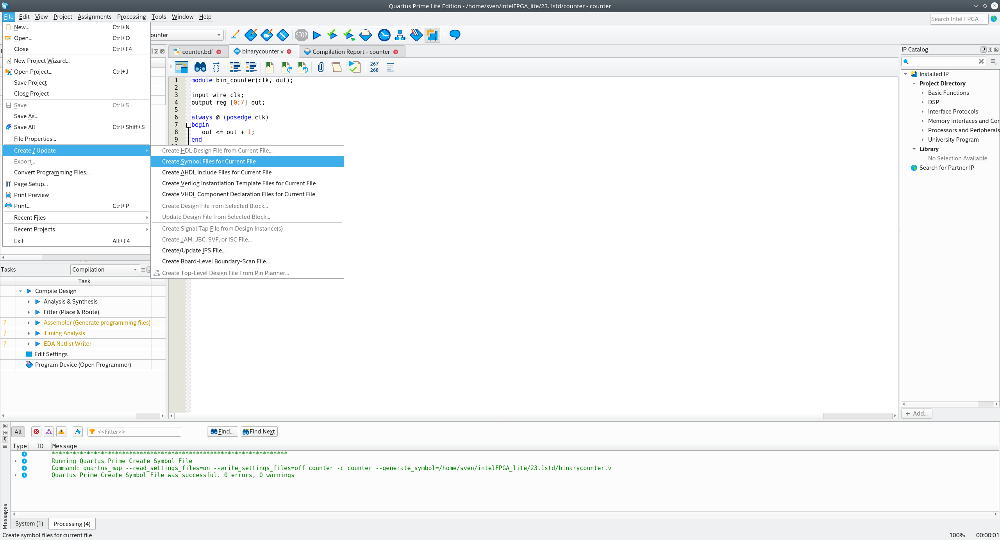
We open the file / tab clock_divider.v and repeat the step above.
After that step we find the just newly created files in the Symbol Library, open the symbol library (see picture below) 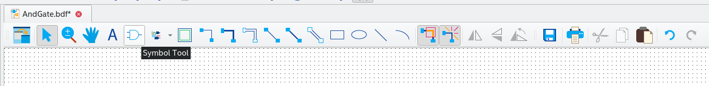 and you find the modules under directory project.
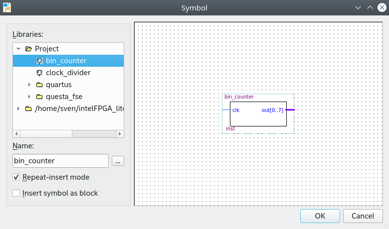
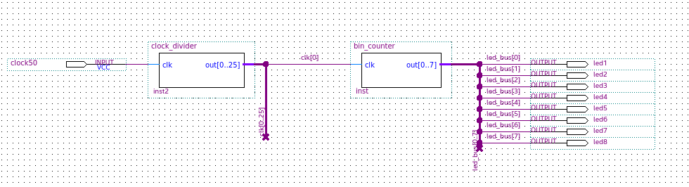
Next, follow the different buildsteps throughout the schematic file:
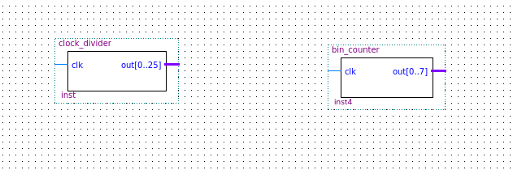
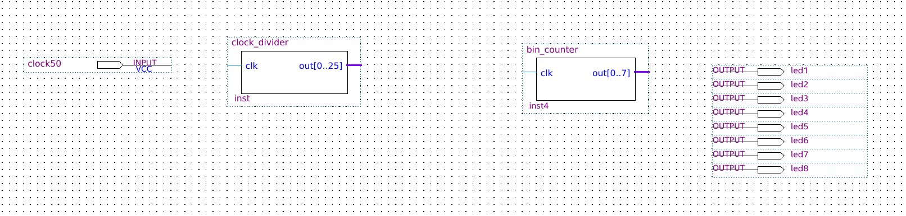
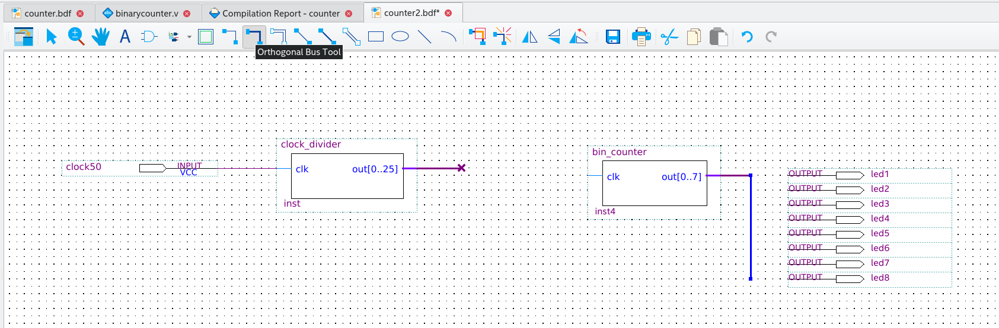
When under properties assigning the bus width, be aware that the syntax is '..' instead of ':' (semicolon) !!
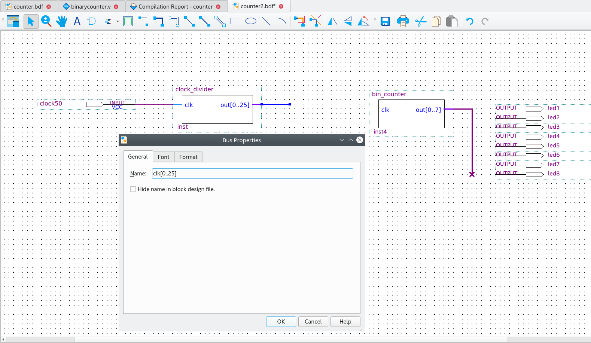
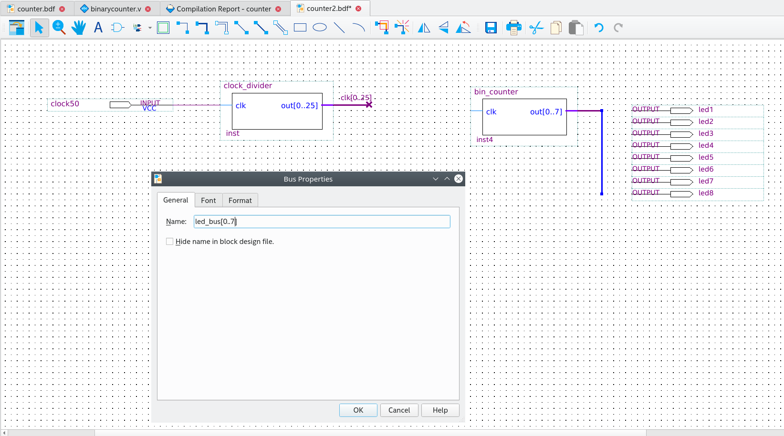
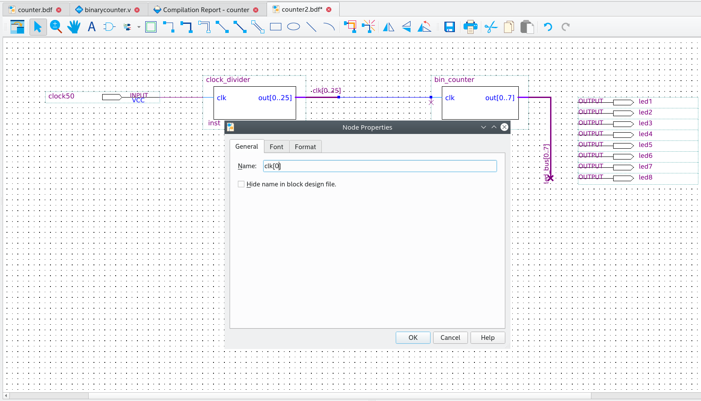
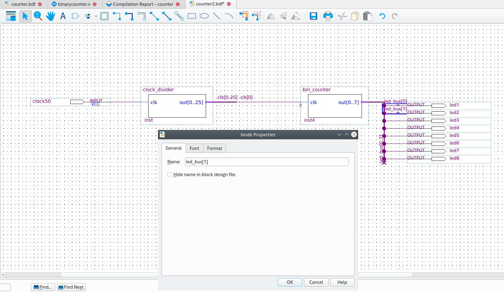
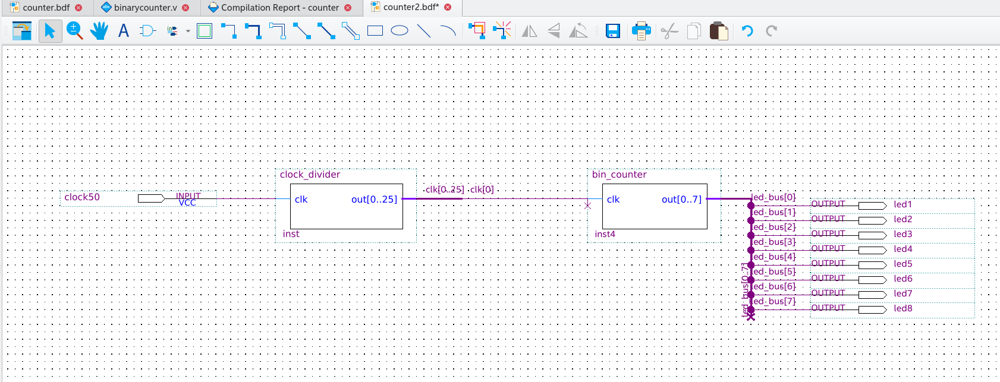
Pin assignment
Next we need to link the design inputs and outputs to the physical pins. Below the picture of the clock pin. Do not forget to run the synthesis or at least the analysis before.
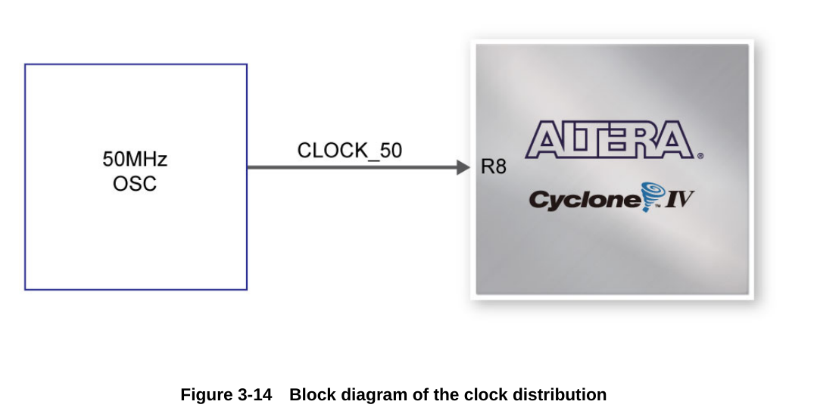
And the picture of the LED outputs.
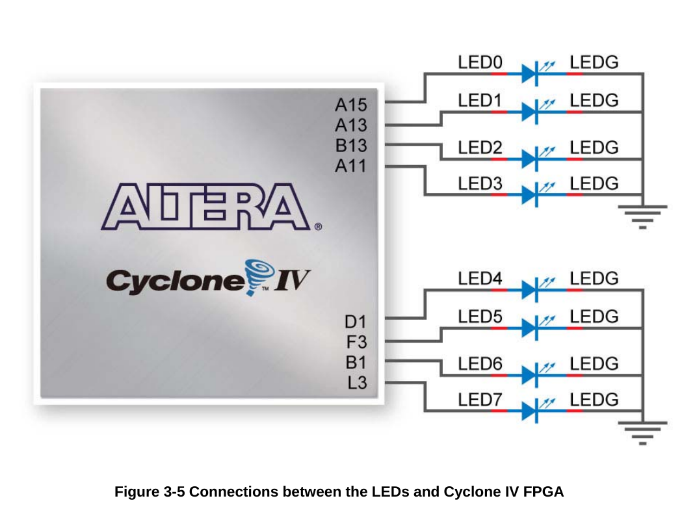
And here the image of the pin planner
So for the DE0-nano board we need to assign the pins as follows:
-
clock50 | PIN_R8
-
led1| PIN_A15
-
led2| PIN_A13
-
led3| PIN_B13
-
led4| PIN_A11
-
led5| PIN_D1
-
led6| PIN_F3
-
led7| PIN_B1
-
led8| PIN_L3
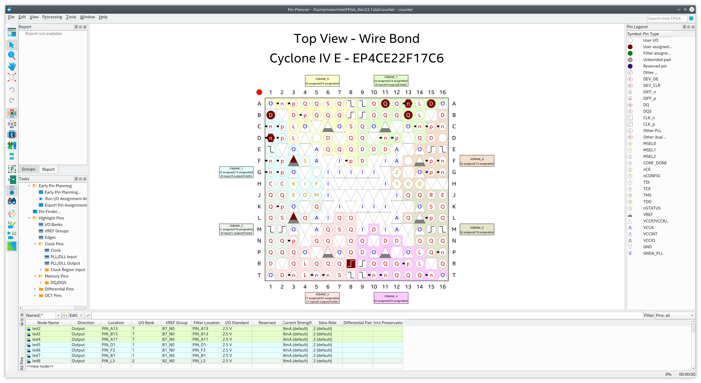
Programming the device
So now we are done with all the work, we can do full synthesis and program our board.
Go to Tools >> Programmer or simply click on the programmer icon, and connect your lovely FPGA board to the computer via usb. The hardware should be detected displayed, as well as the sof software file chosen.
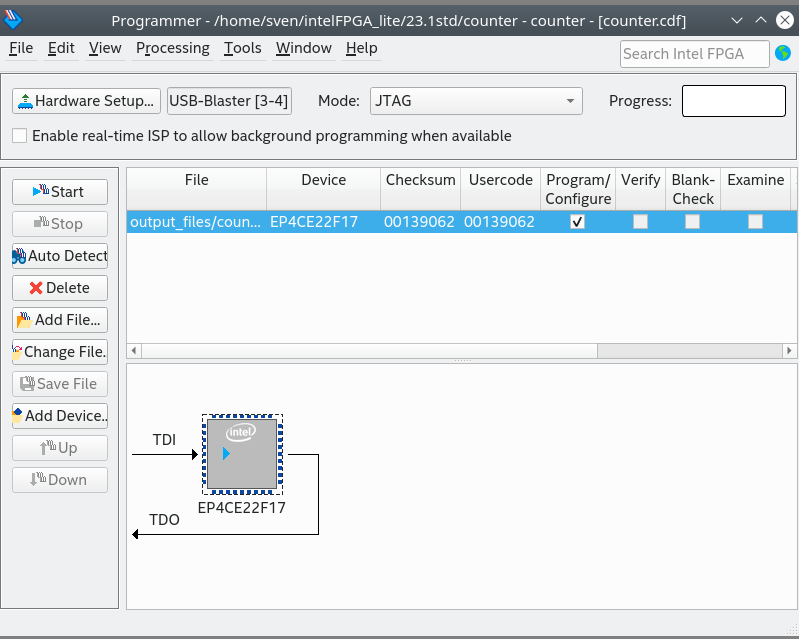
Finally, you should see the leds on the board counting with a frequency of 0.745 Hz.
Here as well are the project files Counter project files
Disclaimer: I have stolen this tutorial from here but given it my own images and style.